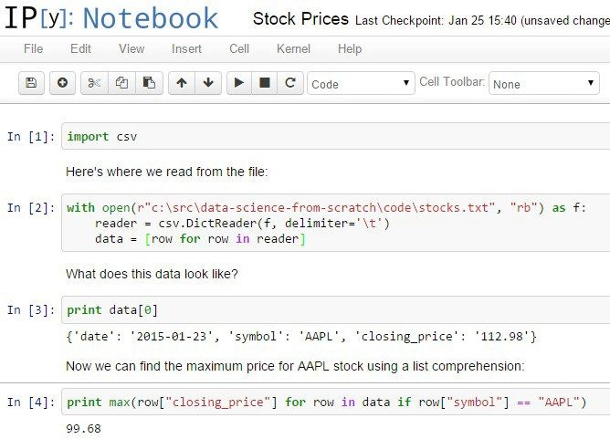

25.1 IPython
在本书前面的章节我们提到过 IPython（http://ipython.org/ ）。它提供了一个远比标准 Python shell 功能强大的 shell，而且加入了一些“魔法函数”，可以让你（比如）轻松地复制粘贴代码（以空行和空白的组合形式实现代码通常是比较复杂的），而且可以在 shell 内部运行代码。
掌握了 IPython 会让你的工作变得非常轻松。（甚至仅仅学一点点 IPython 就可以了。）
此外，它还允许你创建将文本、Python 动态代码和可视化相结合的“日记本”（notebook），你可以将它们与别人共享，或仅仅保存为自己的日志（图 25-1）。

图 25-1：一个 IPython 日记本